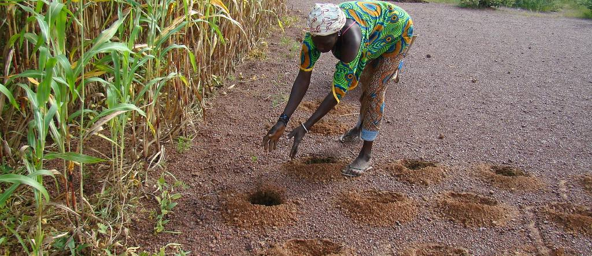
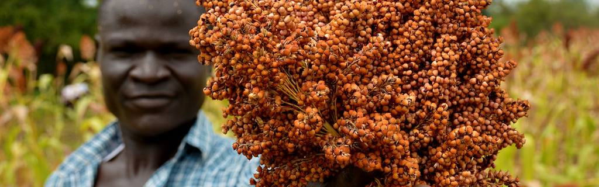

The evidence behind CGIAR’s climate work, in one place
“We aim to drive science, innovation, and collaboration to transform food, land, and water systems” for a climate-resilient, net-zero and equitable future. This site is the curated front door to the datasets, publications, tools and methods that work runs on.
Quotation from the Climate Action programme overview on cgiar.org, read 02/11/2026.
Targets and country count as published on cgiar.org, read 10/08/2026 and again 02/11/2026.
What are you looking for?
The five areas of work, and the themes within them
The five areas are the programme’s published structure, as on cgiar.org. The themes beneath each are an informal grouping built from the tags on the catalogued items, placed under the area where most of their items sit. Counts are matched from the catalogue at page load.
Looking for the datasets, notebooks and tutorials?
The Climate Data Hub is the data piece: catalogued climate records with their metadata, runnable notebooks, and tutorials for getting data into Python, R or a desktop GIS. This site points to it rather than copying it.
Four climate records most analyses start from
Resolution, coverage and update cadence read from each provider on 10/08/2026. Where a provider has not published a field, it is left out rather than guessed.
